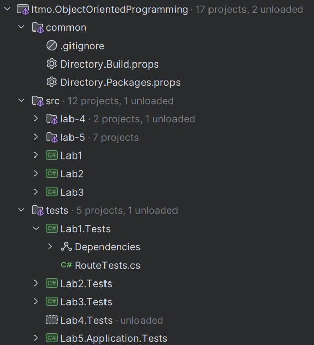

Дисциплина «Объектно-ориентированное программирование и проектирование»
ООП и проектирование · Лекция 10.1
Переход на компетентностную модель
Технологии ИИ в разработке
Использование ИИ обязателено
ООП и проектирование
ИИ запрещён. Учимся развивать свои компетенции классического разработчика.
Первые недели будет медленнее и труднее, чем на C++. Так и должно быть.
ООП и проектирование · Лекция 10.2
Что изменилось по сравнению с прошлым курсом
было
задача→функция→работает→сдал
оценивали, что программа делает
стало
задача→какие сущности→кто за что отвечает→что нельзя сломать→код
оцениваем, почему решение именно такое
ООП и проектирование · Лекция 10.3
Правило курса: только IDE
Для написания кода разрешена только IDE — условно как бумажка с ручкой, и больше ничего.
AI Assistant и ИИ-автодополнение в Rider выключены.
Rider подсказывает синтаксис, ошибки и рефакторинги — этого достаточно.
ООП и проектирование · Лекция 10.4
Формулировка из силлабуса
syllabus.md, раздел «Не самостоятельное выполнение работ»
Использование не процедурных инструментов генерации кода (LLM, любой ML-based способ генерации кода, любой code completion не основанный на правилах intelli-sense или аналогичных инструментов)
Использование любых инструментов ML-based инструментов для проектирования реализаций работ
Санкция — бан без права исправления работы.
ООП и проектирование · Лекция 10.5
Что можно, что нельзя и почему
Крайняя необходимость
Консультация вне IDE и не про вашу лабораторную — понять концепцию из лекции или как в C# сделать то, что в C++ делали иначе.
Не «спросить, как правильно», а «понять, что вообще спрашивать».
Нельзя
Получить код или фрагмент и перенести — целиком, «по мотивам», переписав своими словами.
Отдать агенту задание и работать с его планом.
«Проверять» у агента решение перед защитой.
Почему так
Задача курса — набить руку на собственных ошибках. Применить подход по наитию, сдать, и на защите в разговоре с практиками выяснить, почему решение не подошло.
Сомневаетесь, разрешено ли, — считайте, что нет.
ООП и проектирование · Лекция 10.6
Как это проверяется на защите
«Добавь сейчас вот такое поведение»
Правка кода при преподавателе, 5–10 минут.
«Почему в качестве абстракции выделен именно такой интерфейс?»
Вопросы про решения, а не про синтаксис.
«Что сломается, если требование изменится вот так?»
Понимание собственной структуры.
Всё это нельзя сделать с чужим кодом.
ООП и проектирование · Лекция 10.7
Как сдаётся работа
01
Ветка → пул-реквест
Семантический нейминг веток, PR, коммитов.
→
02
Ревью преподавателя
→
03
Правки
Закрыть комментарий без изменения кода — штраф.
→
04
Аппрув → мердж
Мердж без аппрува — нарушение регламента.
→
05
Очная защита
Работа выполнена, когда баллы появились в таблице.
В PR — только эта лабораторная. Конфигурацию не трогать без аппрува.
ООП и проектирование · Лекция 10.8
Пять лабораторных
ЛР1
Вводная: C#, классы, инкапсуляция
Перенести навык с C++ на C#; первая объектная декомпозиция.
ЛР2
Структурные паттерны
Композиция вместо наследования.
ЛР3
Порождающие паттерны
Кто и как создаёт объекты.
ЛР4
Поведенческие паттерны
Как объекты взаимодействуют.
ЛР5
Архитектура
Как пишется код в больших проектах.
ООП и проектирование · Лекция 10.9
Оценивание: 100 баллов
80
ЛР1
ЛР2
ЛР3
ЛР4
ЛР5
Экзамен 20
Распределение баллов между лабораторными уточняется. Сроки сдачи регулируют практики для каждой группы индивидуально.
Сдаётся: репозиторий, защита с правкой кода вживую, вопросы по решениям.
ООП и проектирование · Лекция 10.10
За что снимают баллы
Дедлайны
Сроки объявляют практики. Каждая неделя после дедлайна — −20% от максимума. «Дедлайн в субботу, сдали в понедельник — уже −20%».
Неполное выполнение
PR «чтобы попасть в дедлайн» — либо минус баллы, либо на дорешивание с новым временем сдачи.
Грубые или систематические ошибки
Несоблюдение Do/Don't; повтор ошибки после ревью; закрытые без правок комментарии; много замечаний.
Несамостоятельная работа
Плагиат, третье лицо, ML-генерация, ML-проектирование — бан без права исправления.
Очередь на защиту: сначала текущая лаба → затем просроченные, залитые до дедлайна → после дедлайна → остальные.
ООП и проектирование · Лекция 10.11
Инструменты
Только Rider
AI Assistant выключен
.NET 10
Один инструмент — чтобы на защите все смотрели в одно и то же, а подсказки Rider стали первым ревьюером.
ООП и проектирование · Лекция 10.12
План лекции
C++ → C#
Зачем ООП
Инкапсуляция и сокрытие
Композиция
Полиморфизм
Наследование
Проектирование
Do/Don't
Итоги
10
9
11
7
11
7
7
7
4
минуты
ООП и проектирование · Лекция 10.13
Что такое .NET и что такое C#
C# — язык
↓
IL — промежуточный код
↓
.NET рантайм + BCL
Windows
macOS
Linux
Версия курса — .NET 10.
ООП и проектирование · Лекция 11.1
Главное отличие: среда управляемая
C++
Выделил — освободил.
Проверил указатель.
Не потерял объект.
.NET
new — создали.
Сборщик мусора — освободил.
Ссылка на объект — не указатель.
Проверять, освобождать, арифметика — не нужно.
В ООП всё — класс. Классы — ссылочные типы.
ООП и проектирование · Лекция 11.2
Ссылки и значения
ссылочный тип
var a = newPoint(1, 2); // Point — class, ссылочный типvar b = a;b.MoveBy(10, 0); // a.X тоже стал 11: a и b — один объект
значимый тип
public record structCoordinate(double X, double Y); // struct — значимый типvar p = newCoordinate(1, 2);var q = p;q = q with { X = 11 }; // p.X по-прежнему 1: q — копия
ab
→→
Point(11, 2)
pq
(1, 2)
(11, 2)
C++ → C#Первый случай — как передача по указателю, только без * и ->; второй — как обычная структура на стеке. record struct — короткая запись неизменяемой структуры с двумя полями и конструктором; with — копия с изменённым полем.
Сущности предметной области — классы. Маленькие неизменяемые значения (координата, деньги, идентификатор) — структуры.
ООП и проектирование · Лекция 11.3
Карта различий для тех, кто писал на C++
Было в C++
Стало в C#
Комментарий
.h + .cpp
один .cs
объявление и реализация вместе
#include
using
подключаем пространства имён, не файлы
main()
Program.cs
точка входа; можно писать команды сразу, без main
указатели, new/delete
ссылки, new без delete
см. предыдущий слайд
struct / class
class — ссылочный, struct — значимый
см. предыдущий слайд
std::string
string
неизменяемая
std::vector<T>
List<T>
и десятки других коллекций в BCL
std::cout <<
Console.WriteLine()
геттеры/сеттеры
свойства { get; set; }
разберём в блоке 3
virtual
virtual + обязательный override
компилятор не даст переопределить молча
множественное наследование
нет; вместо него интерфейсы
одна база-класс, сколько угодно интерфейсов
auto
var
нет
null и nullable-типы
компилятор предупреждает о возможном null
ООП и проектирование · Лекция 11.4
Проект в Rider
Место под скриншот структуры решения

.sln — решение
.csproj — проект
Program.cs — точка входа
класс — отдельный .cs
Подсветка Rider: неиспользуемое, рефакторинг — ваш первый ревьюер.
ООП и проектирование · Лекция 11.5
Парадигма
Не «стиль», а ответ на конкретную боль.
определение
Парадигма программирования, по факту, это набор концепций и правил, нужных для решения определённого рода проблем, возникающих при разработке.
ООП и проектирование · Лекция 12.1
Что вы уже знаете
определение
Структурное программирование – отказ от jump инструкций в коде (оператор goto) в пользу конструкций контроля потока выполнения (if, for, while, итд), направленный на структуризацию кода, для его лучшей читаемости и понимания, оттуда и название.
определение
Процедурное программирование – разбиение программы на набор отдельных подпрограмм, связанных между собой, направленное на декомпозицию и переиспользование логики.
Оба решают свои проблемы — и оставляют одну.
ООП и проектирование · Лекция 12.2
Программа — машина состояний
правило 1правило 2правило 3
↓↓↓
данные
↑↑↑
правило 4правило 5
Правила живут в голове — пока людей один, а требований три.
ООП и проектирование · Лекция 12.3
Инвариант данных
Ключевое понятие лекции.
определение
Инвариант данных – набор корректных состояний данных, определяемый набором бизнес-требований к этим данным.
Где вы написали бы проверку? А если функций, меняющих баланс, семь?
ООП и проектирование · Лекция 12.5
Инкапсуляция
определение
Инкапсуляция — её суть заключается в объединении данных и поведений, оперирующих этими данными.
public classPoint{public int _x;public int _y;public voidMoveBy(int deltaX, int deltaY) { _x += deltaX; _y += deltaY; }}
C++ → C#public перед классом — видимость типа; тела методов пишутся прямо в классе; _x — принятое в C# именование приватных полей (здесь они пока публичные — намеренно).
Ничто не мешает написать point._x = 999 мимо MoveBy.
ООП и проектирование · Лекция 13.1
Сокрытие
определение
Сокрытие подразумевает ограничение доступа к каким-либо данным или поведениям.
public classPoint{public int X { get; private set; }public int Y { get; private set; }public voidMoveBy(int deltaX, int deltaY) { X += deltaX; Y += deltaY; }}
C++ → C#{ get; private set; } — свойство: снаружи выглядит как поле (point.X), внутри — пара методов. Читать могут все, писать — только сам класс. Это замена паре getX() / setX() и главный инструмент сокрытия в C#.
ООП и проектирование · Лекция 13.2
Друг без друга не работают
Инкапсуляция без сокрытия
public classPoint{public int _x;public int _y;public voidMoveBy(int dX, int dY) { _x += dX; _y += dY; }}
Данные можно менять мимо методов.
Сокрытие без инкапсуляции
public classPoint{private int _x;private int _y;}
Данные есть, сделать с ними ничего нельзя.
Вместе — абстракция.
ООП и проектирование · Лекция 13.3
Абстракция
определение
Абстракция представляет собой чёрный ящик для её разработчика-потребителя, в том смысле, что её реализация для него недоступна, скрыта, он не обязательно знает какие именно данные используются для достижения поведений, предоставляемых абстракцией, так же, не может повлиять на эти данные напрямую, лишь через предоставленные поведения, отражающие определённые бизнес правила.
public double DistanceFromStart => Math.Sqrt(X * X + Y * Y);
C++ → C#=> — метод/свойство из одного выражения; снаружи неотличимо от хранимого свойства. Потребителю всё равно — и в этом смысл.
Исключение не бросаем: это ошибка бизнес-логики, а не программиста (Don't 22).
Это и есть решение проблемы со слайда 23.
ООП и проектирование · Лекция 13.5
Типы и композиция
Point мы уже собрали из двух int — это композиция.
определение
Композиция — создание одних типов, на основе других, используя хранение их данных, как непосредственную часть описываемого объекта (композитный – состоящий из нескольких частей).
Два вида — по тому, откуда берутся значения.
ООП и проектирование · Лекция 14.1
Агрегация
определение
При агрегирующей композиции, значения получаются извне, их время жизни никак не привязано к объекту, частью которого они являются.
publicPoint(int x, int y) { X = x; Y = y; }var point = newPoint(420, 69);
C++ → C#Конструктор без списка инициализации, присваиваем в теле; var = auto.
ООП и проектирование · Лекция 14.2
Ассоциация
определение
При ассоциативной композиции значения создаются непосредственно при инициализации объекта, соответственно, время жизни таких объектов привязано к объекту, частью которого они являются.
public classImmutablePoint{publicImmutablePoint(int x, int y) { X = x; Y = y; DistanceFromStart = Math.Sqrt(x * x + y * y); }public int X { get; }public int Y { get; }public double DistanceFromStart { get; }}
C++ → C#{ get; } без set — присвоить можно только в конструкторе; получаем неизменяемый объект без const на каждом поле.
Выбор между агрегацией и ассоциацией — уже проектное решение: кто владеет значением и отвечает за его корректность?
ООП и проектирование · Лекция 14.3
Полиморфизм подтипов
Одна абстракция, несколько реализаций; код, работающий с абстракцией, не знает, какая реализация ему досталась.
определение
Полиморфизм — его суть заключается в отделении поведения абстракции от его реализаций.
код-потребитель
→
абстракция
↓
реализация 1
реализация 2
ООП и проектирование · Лекция 15.1
Интерфейс
public interfaceIPoint{int X { get; }int Y { get; }double DistanceFromStart { get; }}public classPoint : IPoint { /* как выше, + MoveBy */ }public classImmutablePoint : IPoint { /* как выше */ }
C++ → C#interface — как класс из одних чисто виртуальных методов, но отдельная конструкция; : IPoint — «реализует»; реализовать можно сколько угодно интерфейсов. Префикс I — соглашение.
Пример учебный: в реальности для модели вроде точки абстракцию не выделяют.
ООП и проектирование · Лекция 15.2
Два вида наследования
определение · реализация
Реализация (наследование поведений) – используются интерфейсы, в C# реализовывать интерфейсы могут как классы, так и структуры. Говорят, что тип реализует интерфейс (класс Point реализует интерфейс IPoint).
определение · наследование
Наследование (наследование реализаций) – используются классы, в C# одна структура не может быть унаследована от другой, либо от класса. Говорят, что класс является наследником другого класса, либо же его подклассом (класс Cat является наследником класса Animal).
ООП и проектирование · Лекция 15.3
Наследование реализации
public classAnimal{publicAnimal(string name) { Name = name; }public string Name { get; }public virtual voidVoice() => Console.WriteLine("I am an animal!");}public classCat : Animal{publicCat(string name) : base(name) { }public override voidVoice() => Console.WriteLine("Meow!");}
C++ → C#virtual знаком; override обязателен — без него компилятор скажет, что вы прячете метод, а не переопределяете; : base(name) — вызов конструктора родителя, как в списке инициализации. abstract — класс/метод без реализации, как чисто виртуальный.
ООП и проектирование · Лекция 15.4
Объект
Теперь можно сформулировать.
определение
Объект, является набором атрибутов и поведений, реализация и данные которого сокрыта от конечного пользователя объекта. Фактически, объект является абстракцией, представляющий какой-то объект моделируемой предметной области.
ООП и проектирование · Лекция 15.5
Наследование — не способ переиспользовать код, а механизм полиморфизма
Самая частая ошибка проектирования — перепутать одно с другим.
public abstract classCar{public abstract voidMoveTo(Coordinate coordinate);}public classTruck : Car{public override voidMoveTo(Coordinate coordinate) => Console.WriteLine($"Moving slowly to {coordinate}");}public classSportCar : Car{public override voidMoveTo(Coordinate coordinate) => Console.WriteLine($"Rapidly moving to {coordinate}");}
C++ → C#$"..." — интерполяция строк. Coordinate — та же record struct со слайда 16.
Наследник является родителем с особым поведением — упор на изменение поведения.
ООП и проектирование · Лекция 16.4
Ключевые понятия сегодняшней лекции
Парадигма
Инвариант данных
Инкапсуляция
Сокрытие
Абстракция
Композиция (агрегация / ассоциация)
Полиморфизм подтипов
Наследование поведения vs реализации
Объект
is a vs has a
Ссылочный тип vs значимый
ООП и проектирование · Лекция 19.1
Вывод лекции
определение
Парадигма ООП представляет собой концепцию объединения данных и логики, их обрабатывающей. Модификация и доступ к этим данным ограничены для пользователей объектов, принуждая к использованию соответствующих поведений, таким образом облегчая соблюдение инварианта данных, путём локализации мест их модификации, принуждения соблюдение бизнес-правил, описывающих этот инвариант.
ООП и проектирование · Лекция 19.2
Вопросы
ООП и проектирование · Лекция 19.4
do-donts.md
В репозитории курса.
~50 правил, половину пока не поймёте — там LINQ, generics, тесты.
Перед каждой лабораторной — перечитывать.
Перед PR — проходить как чек-лист.
Просто какой-то код писать не получится. Несоблюдение стоит баллов.
ООП и проектирование · Лекция 18.1
Семь правил, которые вы уже понимаете
Правило из Do/Don't
Откуда это в лекции
Поддерживать инвариант типа: никакое изменение не должно делать экземпляр невалидным (Do 11)
Инвариант · Account
Минимизировать доступ к данным; нельзя менять тип извне (Do 4). Не использовать публичные поля и приватные свойства (Don't 20)
Сокрытие · { get; private set; }
Свойства вместо геттер/сеттер методов (Do 15)
Сокрытие
Конструктор создаёт полностью инициализированный объект; валидация аргументов в конструкторе; иммутабельность (Do 3, 9, 10)
Агрегация · ImmutablePoint
Не использовать наследование для переиспользования логики; наследник является базовым (Don't 11)
Dealer : Deck
Не бросать исключения при ошибках бизнес-логики (Don't 22)
Withdraw возвращает результат
Не ограничивать доменные значения примитивами вроде uint/byte — заводить свой тип с валидацией (Don't 23)
struct как значение · правило живёт в типе, а не в uint
ООП и проектирование · Лекция 18.2
Три правила про форму
Нейминг
Английские общепринятые термины, без сокращений, транслитерации и машинного перевода; Http, не HTTP.
public classThread{public voidJoin(Student student) { }}
Читается как работа с потоками ОС.
Никаких магических чисел
Именованные константы (Don't 2).
Никакого мёртвого кода
И комментариев к очевидному (Don't 9, 10).
ООП и проектирование · Лекция 18.3
DRY · KISS · YAGNI
DRY
Не копируй — вынеси в метод.
KISS
Атомарные методы, не переусложнять.
YAGNI
Проектируйте ту предметную область, которая описана в задаче, а не ту, что может понадобиться.